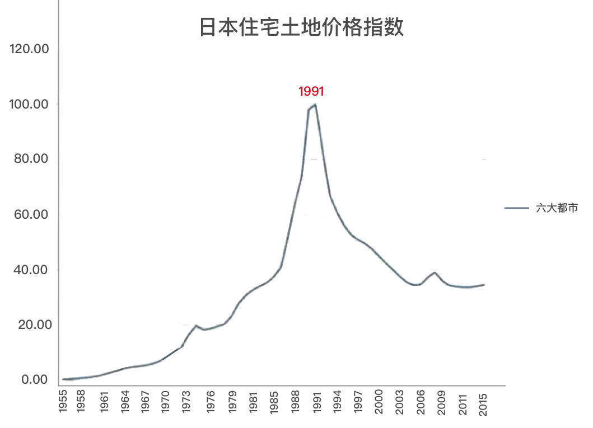
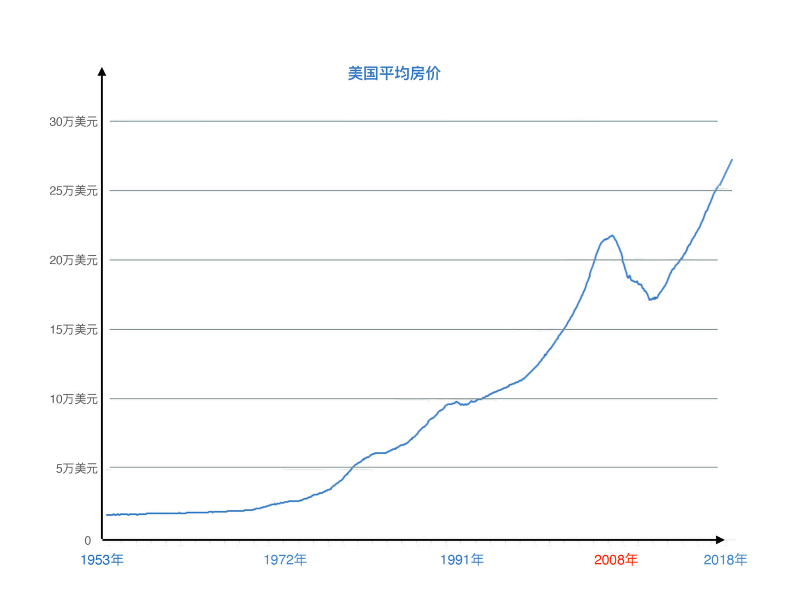
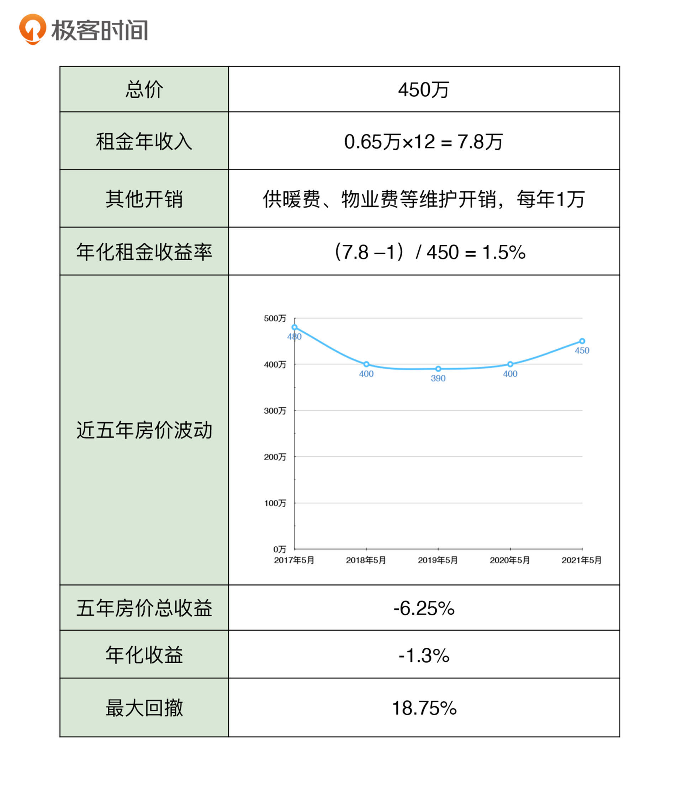
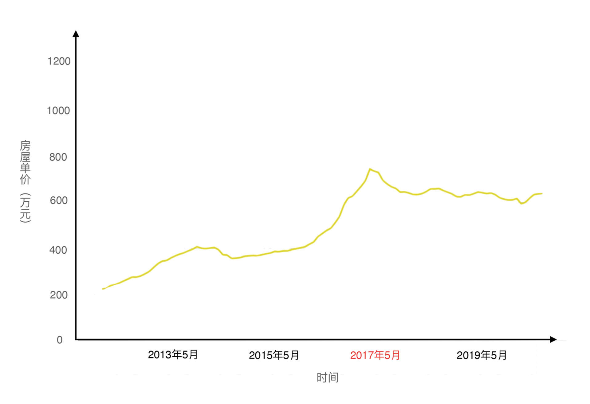
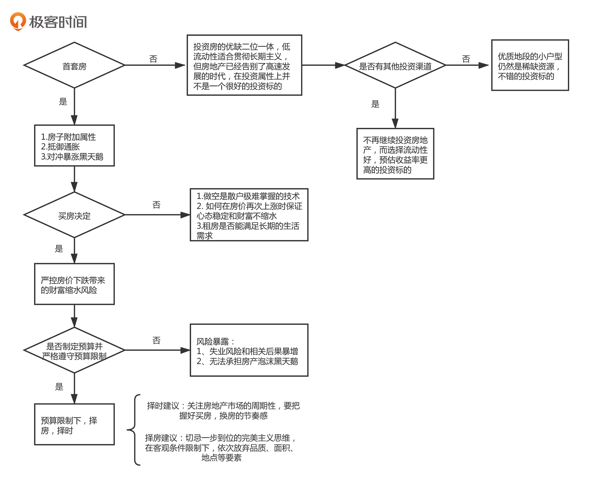

- 00 开篇词 为什么说程序员最适合学财富管理？.md.html
- 01 财富框架：建立属于你自己的财富双塔.md.html
- 02 个人发展：你自己的发展才是最大的财富源泉.md.html
- 03 理财金字塔：如何建立稳固的投资理财结构？.md.html
- 04 实战知识：有哪些收益稳健的经典资产配置组合？.md.html
- 05 支点投资法：主动投资是讲逻辑的！.md.html
- 06 不当韭菜：在财富管理的过程中摆正心态，知己知彼.md.html
- 07 职业方向：如何选择一个有前景的职业方向？.md.html
- 08 职业规划：大公司VS小公司，怎样选择更有前途？.md.html
- 09 期权股权：如何正确处理公司的期权、股权？.md.html
- 10 跳槽涨薪：如何规划一条合理的职业道路？.md.html
- 11 财富拓展：35岁失业？程序员如何拓宽财富渠道？.md.html
- 12 房产投资：如何做出理性的买房决策？.md.html
- 13 实战知识：让我们编程计算下怎么还房贷最合适.md.html
- 14 基金投资：如何让专业人士帮你赚钱？.md.html
- 15 实战知识：如何选出一只优质的基金？.md.html
- 16 股票投资：最适合散户的股票投资方法是什么？.md.html
- 17 投资闭环：如何成为越来越专业的投资者？.md.html
- 18 技术优势：程序员如何用技术超越其他投资者？.md.html
- 19 量化投资：典型的量化投资系统都包含哪些模块？.md.html
- 20 价值投资：永远不过时的中长期投资策略.md.html
- 21 趋势跟踪：怎样跟着趋势一起赚钱？.md.html
- 22 轮动策略：如何踩准市场变换的节奏？.md.html
- 23 对冲思想：这个世界上有稳赚不赔的生意吗？.md.html
- 24 多因子模型：整合不同策略，形成合力的顶层框架.md.html
- 25 机器学习：我们能用机器学习来建立投资模型吗？.md.html
- 26 量化实战：从0到1搭建起一套简单的量化投资系统（上）.md.html
- 27 量化实战：从0到1搭建起一套简单的量化投资系统（下）.md.html
- 番外一 王喆对话李腾：程序员对基金经理的灵魂十问（上）.md.html
- 番外三 有哪些能够持续学习的参考资料和相关网站？.md.html
- 番外二 王喆对话李腾：程序员对基金经理的灵魂十问（下）.md.html
- 番外四 知识总结：这门课的全部思维导图.md.html
- 答疑课堂（一） 财富框架篇、个人发展篇思考题集锦.md.html
- 答疑课堂（二） 投资实战篇、投资进阶篇思考题集锦.md.html
- 结束语 知行合一：财富管理是一生的事情.md.html
- 捐赠
12 房产投资：如何做出理性的买房决策？
你好，我是王喆。
从这一讲开始，我们就进入了“投资实战篇”的学习。在这个模块里，我会针对“投资理财塔”中的主要投资标的，讲一讲最适合我们普通人的投资方法。
今天，让我们先来看那个普通人最关心的，也是最重大的投资行为：买房。
提到买房，如今中国的高房价是一个无法回避的问题。我身边的很多人，对于是否要买房这件事摇摆不定，有的还声称“三十年内不考虑买房”。对此我想说的是，越早考虑买房的问题，我们离一个健康的家庭财富状态就越近。
因为房产是我们家庭财富的最重要组成部分。如果你逃避现实压力，拒绝有计划地思考这个问题，不仅会错过房产这个重要的财富项，而且可能会严重影响未来的生活质量和财富健康程度。
这一讲，我就用这门课一直坚持的“有逻辑”的财富管理理念，来帮你解决两个问题：
- 如何把握买房的时间节点，判断自己当下是不是应该买房？
- 买房的时候，要注意哪些最重要的问题？
首套房还是应该尽早“上车”
其实，我非常理解当代年轻人面对买房问题时略显绝望的心态。一方面，当今一线城市的房价已经高到了普通人根本负担不起的地步；另一方面，未来中国的人口增速减缓，人口老龄化问题肯定会对房价产生一定的负面影响。现在买不起，买了之后还可能贬值，这种情况下，我们真的还要买房吗？我们等房价崩溃了再买可以吗？
要回答这两个问题，我们先明确一个前提：到底是购买首套房，还是投资房。它们的投资逻辑是完全不同的。这里，我们先说要不要买首套房的问题。
我的回答很明确：你要“尽早”在一个“合适的时间”搭上房地产这辆车。
这里我先讲一讲，为什么要尽早“上车”。在下面讲投资房的时候，我再分析一下，什么是合适的购房时间。
第一套房能早买就早买，首要原因就是中国房产的附加属性问题，这已经是老生常谈了。户口、医疗、教育、住户法律保障，这一切都是买房优于租房的地方。但这些要素我想大家都已经非常清楚了，我们今天从另一个角度来看买房的优势：从财富管理的角度来看，房地产的金融属性也大大增加了我们买房的必要性。
也许你会有这样的危机意识：中国的房地产市场很有可能会像曾经的日本一样彻底崩溃，到时候再买房岂不是赚到了？这种想法是非常典型的“做空思维”。但是，“做空思维”对散户，或者说普通投资者来说是非常不好掌握的。如果你自认只是个普通人，没有超出常人的技巧、自信和定力，那就不要尝试做空。
具体一点，为什么不建议你做空呢？我们先来看下世界历史上房地产泡沫破裂的两个经典案例，分别是1991年日本房地产泡沫和2008年美国次贷危机。
观察下面的图片后，你一定可以发现，它们有着共同的典型特征：在泡沫破裂前房价会暴涨，涨幅远超其他年份。要命的是，当你身处这个房价疯狂上涨的阶段时，根本不知道真正的泡沫破裂会在什么时候发生。在这种充满不确定的环境中，如果你的房产是自住房，你几乎不可能选择卖出；如果你没有房产，你的心态有可能彻底失衡。


再来看中国的房地产市场：现在有很多人相信，中国的少子化问题、老龄化问题会引起人口的持续下降，从而让中国房价陷入长期下跌。怎么看待这种说法呢？
这个判断并非不正确，但它只是众多影响未来房价因素中的一个。你可以想想，如果将来有一天，一线城市放松限购了，比如仅仅是把购房资格从五年社保减少到两年，北京、上海的房产走势会怎么样？我们还会考虑人口问题这个周期长达二三十年的问题吗？显然不会了。
举个例子，即使在2020年严格的限购条件下，深圳的房价仍然暴涨了30%，上海北京的房价也跟随上涨。这些房价上涨的情况，不就是在政府严格强调“房住不炒”，中国2020年出生人口再次降低的大环境下发生的吗？总之，我们等待那个泡沫破裂的想法，是不具备可操作性的。
我不想去预测未来中国房价的走势，因为这几乎是一个不可预测的问题。房价走势受经济发展、政府财政、人口政策乃至中美关系等多种因素的影响，其中的每一个我们都无法精确预测。既然无法预测，对于我们普通人来说，就应该用风险管理的思路来解决问题，就是尽量避免房价持续上涨或者暴跌给我们造成的损失。
具体来讲，在首套房的购买中，我们一定要明确：买这套房的目的不是赚大钱，而是对冲未来可能出现的风险。这里的风险主要有两个：
- 确定性风险：通货膨胀。
- 不确定性风险：限购政策、利率政策、国际环境变化等因素带来的房价暴涨。
我们要清楚的是，如果无法对冲这两个风险，带来的后果对个人来说是致命性的。它轻则让我们白忙5年、10年，重则让我们进一步降低生活质量和预期，这样的事情在过去二十年一再发生。
刚刚我们讲到，在未来房价无法预测的前提下，我们可以确定的是，要及早“上车”来对冲未来房价暴涨的风险。与此同时，房价暴跌的黑天鹅事件也不是没有可能发生，为了尽量降低它对我们生活的影响，我们应该采取严格的预算控制手段。接下来，我们就分析一下，在购买首套房的过程中应该注意的最关键问题：预算问题。
如何购买一套适合自己财务状况的房子？
关于预算，我有两个建议。首先，一定要严格在自己的预算范围内选房，预算一旦确定，就不应该在购房过程中有任何的妥协。这是规避黑天鹅风险的重要措施。
2011年，我在购买人生第一套房产的时候，资金情况是这样的：第一年工资结余10万，研究生阶段的兼职和工作室收入40万，父母支援50万，所以我的启动资金是100万。在这样的前提下，我有两个选项，一是选择一套180万的回龙观100平两居室，二是选择一套220万的上地80平两居室学区房。我当时毅然决然地选择了第一个选项，而且把首付控制在80万，留了20万流动资金。
放在现在你当然会认为，从收益率的角度我做出了一个错误的选择。事实也的确如此，回龙观的房子在我2017年卖出的时候是360万，翻了一倍，而上地的这套学区房那时候已经涨到了700万。但我要说的是，即使这样，我仍然坚持这个原则：“普通人的重大投资决策都要以规避风险为第一要务，要严格控制黑天鹅事件可能带来的不能承受的后果。”
为什么这么说呢？如果我当年购买了上地的学区房，万一购房后的几年赶上学区政策变更，或者房地产泡沫导致的房价下跌，而且下跌的幅度超过首付，这套房子就相当于血本无归。而且，由于上地房子的还款压力比回龙观大将近60%，一旦遭遇经济危机带来的大规模失业，我丧失收入来源的话，是有断供可能的。基于这样的逻辑，即使我知道第二套房子的潜力的确大于第一套，还是作出了风险更小的选择。
我有一些年长的美国同事，他们完整经历过2001年美国互联网泡沫危机和2008年次贷危机。其中，不止一人由于在危机中失业，无力偿还房贷，进而被迫卖出自住房。有人只得从加州搬去那时房价还非常低的德州，相当于从零开始。
我相信太阳底下没有新鲜事，在中国，我们同样要规避这样的风险。也许你想说，这种风险发生的概率太小了，可能只有1%，值得我们这么谨小慎微吗？我要说的是，即使它发生的概率只有1%，对于遭受它的家庭来说也是100%的不幸。所以，面对人生的重大投资决策，规避风险永远是最底层的逻辑。
接下来看我的第二个建议，它是用来解决这个常见问题的：预算不够怎么办？
时间到了2021年，你可能会说：老师，时代变了，现在100万的首付，还想买房子？估计连套一居室都买不了。可事实真的是这样吗？买第一套房的话，100万的首付基本对应着300万的房产总价。如果你想在北上广深这些一线城市买房，以北京为例，除了北京的东城西城，各区都有大量的300万以内的一居室，这难道还不够你“上车”吗？
这时你可能想说：100万我也没有，只有50万首付怎么办？那我问你，一定要在北上广深买吗？我们能不能去找一找杭州、成都、武汉、南京、长沙、郑州等等这些新一线城市的房子？据我了解，长沙的房价时至今日都是性价比非常高的。
毫无疑问，这些城市都有很大的发展潜力。即使你不打算未来去那里工作和生活，也可以选择以退为进，先在这些城市买房子。这不仅能解决你的预算不足问题，而且各大城市都完全放开了落户政策，选择这些城市还更容易拿到购房资格。
举个例子，我有一位同事，在北京工作但是没有北京户口。2016年他落户杭州，并在杭州买房，这几年杭州房价涨幅也很大，2020年他就通过置换，非常轻松地在北京购买了面积基本一样的自住房。他的经历是不是很有参考意义？这样的选择要比很多人攒五年钱，一次到位购买房产的想法现实多了。
总之，只要你买房的决心足够坚定，办法总比困难多。如果预算不足，先上车，后换房改善是现实最优的策略。
讲完了购买首套房的问题，你已经知道了：首套房的购买逻辑一定是规避风险，而不是投资收益。为什么第一套房很有必要买，而且要趁早“上车”？因为通过投资你的第一套房产，你可以对冲掉房价上涨带来的个人财富缩水的风险。为什么买第一套房时要控制预算？因为这可以帮助你规避掉房价泡沫破裂的黑天鹅风险。
接下来我们来看投资房，在购买逻辑上，它和首套房是有很大不同的。
购买投资性房产的逻辑应该是怎样的？
很多家庭条件比较好的同学，会考虑买二套房的问题。不知道有没有同学像五年前的我一样，拥有一个非常“low”的人生理想：拥有五套高质量房产，当一个包租公，从此衣食无忧。随着我投资知识的丰富和理财水平的提高，这个理想变成了“建立稳健、抗风险能力强的个人财富体系”。但是，我想一定还是有不少同学对投资性房产很感兴趣。
同样是买房，购买投资房和购买首套房有着完全不一样的底层逻辑。如果说购买首套房是为了解决自住权益、对冲通胀、规避黑天鹅风险这三个问题，那购买投资房已经变成了一个彻彻底底的投资问题。从本质上说，购买一套投资性房产和购买一只股票、一只基金的逻辑是一样的。既然这样，事情就变得简单了：我们应该像评估一只股票那样，去对比投资性房产的预期收益率、最大回撤等技术指标。
那么站在2021年8月这个时间点，房产还是一个优质的投资标的吗？我的答案是：对于普通人来说，房产仍然是一个不算差的标的，但是对于真正成熟的投资者来说，能够找到其他更好的选择。
为什么这么说呢？因为房产这个投资标的，可以说是“成也萧何败也萧何”。它最大的优点和最大的缺点都是流动性差。
一个流动性差的资产，对于大多数喜欢“瞎操作”的散户投资者来说，简直是一个完美的限制，这让我们“不得不”进行长期的价值投资。认真学习过 06讲 的同学一定知道，“长钱优势”在个人财富管理中是多么重要。
但是，我们也要清楚，当今中国的房产价格毫无疑问已经处于高位，它的真实收益率已经下降到一个非常一般的水平。我们以一套位于北京海淀区知春路附近的一居室房产为例，来算一算，一套典型的北京房产作为一个投资标的收益率是多少。


5年前的2017年5月，正好是北京房地产市场的一个高点，一直到2021年5月，房价也没有恢复到当时的高点，累计表现出-1.3%的负收益。而北京的租金收益在这五年基本稳定在1.5%左右。所以事实上，这五年期间，北京的房产作为一个投资标的来说表现平平，几乎是0收益。
这是过去几年的现实情况，我们再考虑下国家政策方针对未来的影响：结合近年国家提出的“房住不炒”“振兴实体经济”“中国制造2025计划”等，我们可以预测，房地产在未来短期内不可能是国家发展的重点，所以房价大概率是不会在近期显著上涨的。
而同期的其他典型资产标的，比如沪深300、美股等，都产生了累计100%左右的涨幅。所以综合来讲，如果你有投资其他资产的能力，房地产并不是一个非常好的资产标的。这就是我为什么在 03讲提到，要避免房产在家庭资产配置中占比过大。
但话又说回来，大部分投资者其实是没有过强的投资能力的。有个经典的炒股警句：“您今年的股票收益是0%，已经超过了90%的投资者。”和90%因为频繁操作把钱亏到股市里的“韭菜”们相比，把钱“困”到房产里，让它稳定地产生租金和长期上涨的收益倒是靠谱很多。所以，房地产投资仍然是可考虑的长期投资选项。
如果你准备购买投资房，我有两个建议。这些建议的依据是房地产的长期行业规律，而且每一条都经过了我不下五次的验证：
第一，尽可能不要在房价暴涨的时候投资。
典型的时间段是2016年全年、2017年初，以及2021年初至2021年7月。由于房地产的跳涨特点，房价一旦开始上涨，就一定是大幅上涨，这就意味着你错过了交易的最佳窗口。
第二，尽可能在房价进入稳定期后两到三年买房、换房。
中国的房地产价格周期一般是4-5年，比如北京最近的一个房地产周期是2017年到2021年，如果你在周期内的第三年购房，极有可能在未来一到两年遇到一轮上涨行情。不同国家房地产的价格周期各不相同，比如美国的房地产价格周期是7年左右（疫情期间的特殊行情除外），同样要把握好购房的节奏感。
上面两条建议，也回答了这一讲开头提出的“什么是合适的购房时间节点”的问题。虽然我们这里讲的是购买投资房，其实在购买首套房时也要考虑房价周期的影响。虽然我们知道要尽早上车，但同时也要避免在当前周期的高点买入。
到这里，我们就层次递进式地讨论清楚了买房决策中最重要的几个问题。
- 要不要考虑买房这个问题？答：要。
- 首套房该不该买，什么时候买？答：要买，而且要尽早买。
- 购买首套房时，应该注意的最关键问题是什么？答：预算控制。
- 该不该购买投资性房产？答：现阶段，房产只能算一个不太差的投资标的，如果你其他标的的投资能力强，不要再考虑房产投资。
- 如何把握买房时间节点，买到价格相对便宜的房子？答：考虑房地产的跳涨特征和价格周期的影响，建议在房价进入稳定期后两到三年购房。
总结
在这一讲中，我们可以说是从整体逻辑上理清了买房的决策链条。下面，我用程序流程图的形式，梳理了这一讲我们讲到的买房逻辑，供你参考。

听完这一讲，细心的同学可能会问：为什么我们不讲讲购房时应该注意的事项，比如户型、地段、面积、学区？
主要原因有两个：一是我认为跟今天讲的决策过程来说，这些问题属于次要问题，我们应该在进行重大决策后，再考虑这些细节操作问题。二是因为这些细节问题比较偏个性化，没有一个非常标准的答案。相关的经验性知识在网上也很容易查到，我们在这里就不再深入下去了。
但还有一个关键问题，这一讲没有涉及到，那就是房贷的处理。我们会在下一讲中详细分析房贷的处理方法，包括用编程计算怎么还贷最合适。期待到时候和你一起发挥咱们程序员的优势，做出正确的贷款决策。
思考题
五到十年前，借钱买房的现象非常普遍，那时候买房的人也取得了巨大的收益。如今，在购买首套房的时候，很多同学也会掏空家里的“六个钱包”，甚至会向亲戚朋友借钱补充首付。但也有一些同学，受限于预算，只能购买老破小、郊区房，甚至卫星城市的房子。
结合这一讲的内容，你觉得哪种做法更适合当下，如果你现在要买房，会怎么做？
欢迎你在留言区与我交流讨论，我们下一讲见。
© 2019 - 2023 Liangliang Lee. Powered by gin and hexo-theme-book.